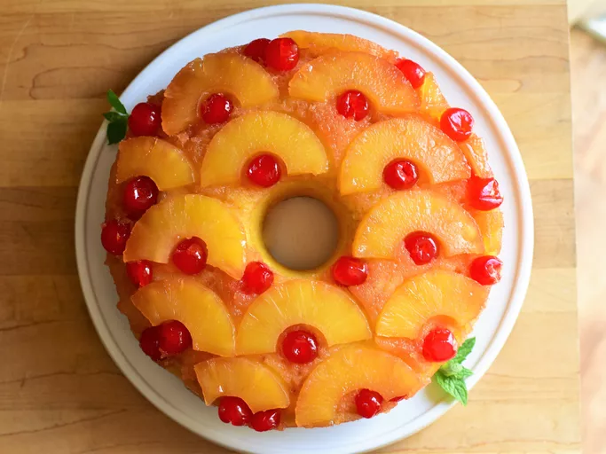

Pineapple Upside-Down Cake
Description
Pineapple upside-down cake is a gorgeous retro dessert that delights all ages! This easy recipe uses a cast iron skillet to bake the tender sweet cake and perfectly caramelized pineapple and cherries.
Ingredients
- Butter: This pineapple upside-down cake recipe starts by melting butter in a cast iron skillet.
- Brown sugar: Brown sugar is sprinkled over the melted butter, resulting in a perfectly caramelized topping.
- Fruit: You'll need a can of pineapple slices and jarred maraschino cherries.
- Cake mix: Prepare a white cake mix according to the package directions. You'll likely need water, oil, and eggs. Some reviewers suggest using a yellow or lemon cake mix.
Steps
- Make the topping: Melt butter in a cast iron skillet, then remove from heat. Sprinkle brown sugar over the butter, then arrange the pineapple slices and cherries in a single layer.
- Add the cake mix: Prepare the white cake mix according to the directions on the package. Pour the batter over the fruit.
- Bake the cake: Bake the pineapple upside-down cake in a preheated oven according to the cake mix directions. Cool for 10 minutes, then turn the cake out onto a plate.